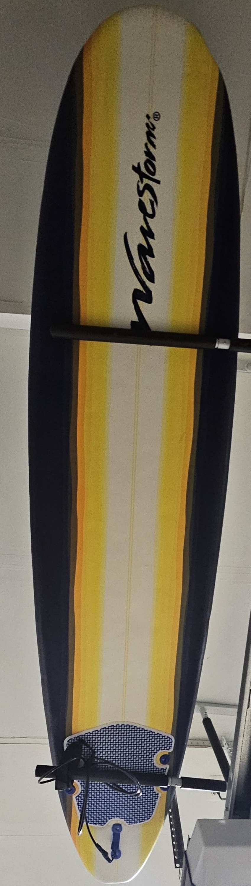
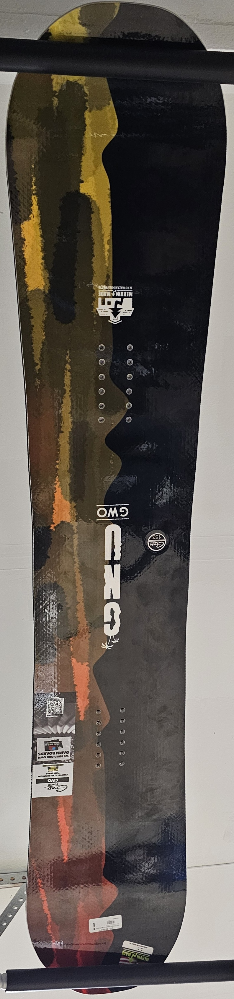
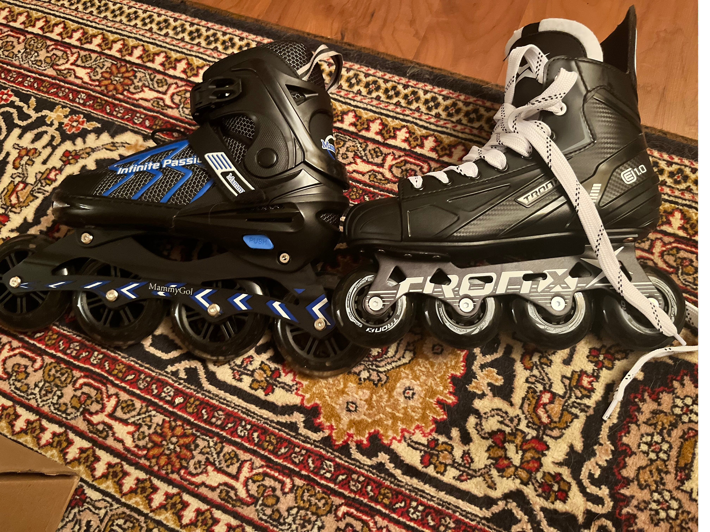
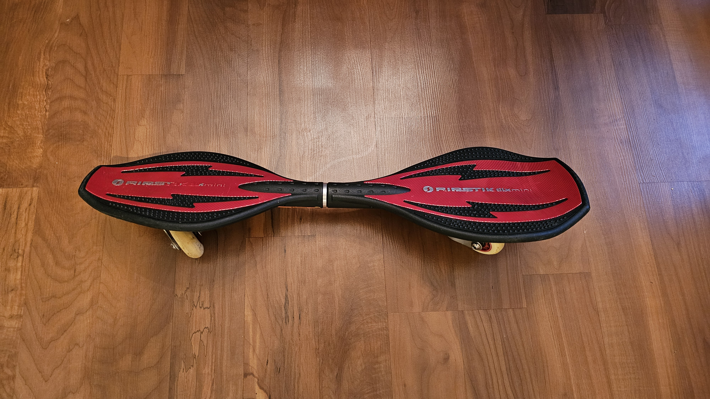
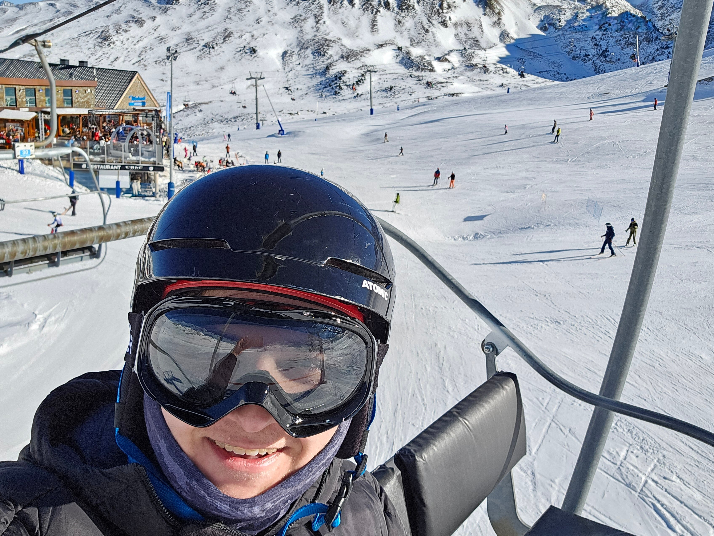
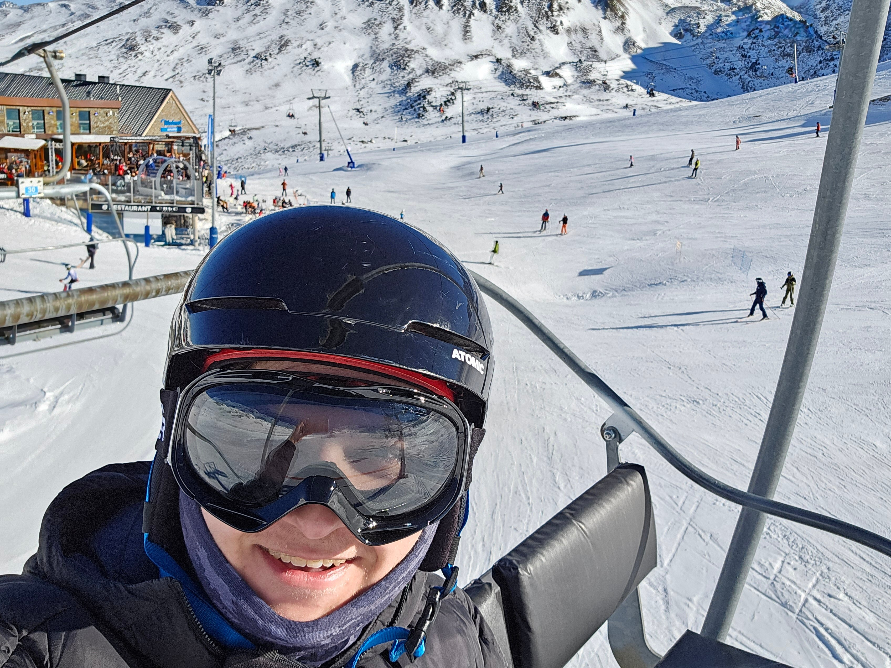
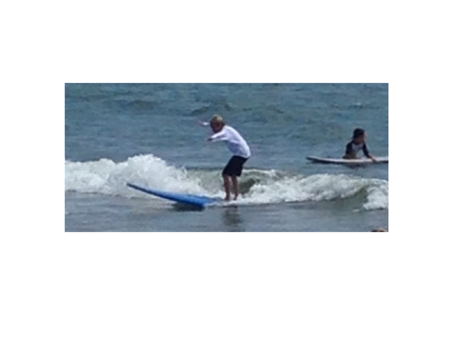
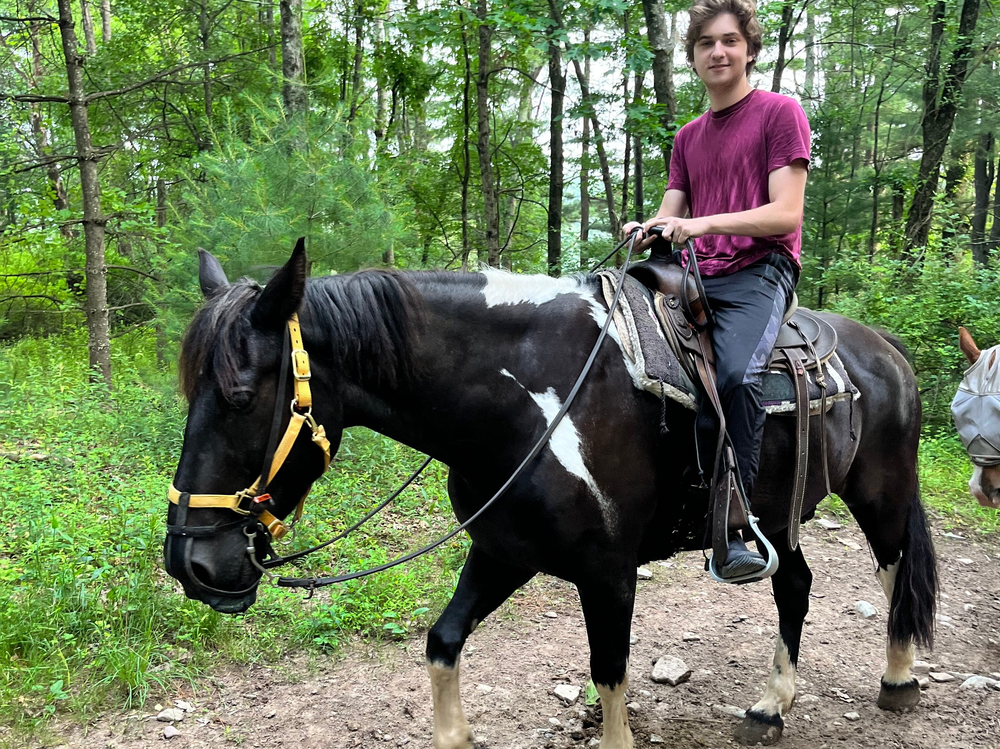
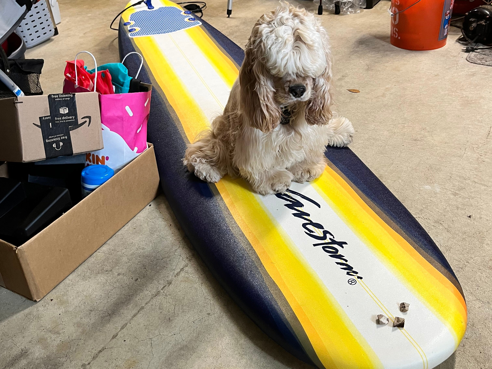

David’s Gear
My personal boards, skates, and gear—each played a key role in learning and adventure.

My First Surfboard
My first surfboard purchased years ago now and was bought to last me as I grew up.
Its a soft-top (foam) and around 8 feet tall, great beginner board for small waves.

Beginners’ Snowboard
First full snowboard I ever purchased. Before I was renting as I grew up since the size of the board should be according to the height of the person.
It was a great buy even with how expensive it was.

Driveway Skateboard
My older brother's first skateboard that I got as a hand-me-down. I never used it until way later in life.
I'm glad I enjoy it now, but a part of me wishes I started with this guy way earlier.

Inline Skates
These are my second/third pair of Roller Blades (inline skates). The first pair started to break down so I threw it out.
These skates are hockey skates that have different uses. The larger wheels one is faster while the smaller is more acrobatic.

Indoor Ripstick
This ripstick is a small one, bought back in 2010s and was my first board while growing up.
The wheels were too small to go over any thing bigger than a crack and was mostly used indoors.

Ourdoor Ripstick
My friends wanted to go ripsticking down a parking garage in my first couple years of college but mine was too small.
I got this board so it can go over larger cracks and small holes down the garage, totally worth the second one.

First Snowbaord
The board I actually learned to snowboard in, even with how bad and old it was, I couldn't get rid of it.
Nice thing to add to my collection.

First Sled
This sled held so many childhood memories as was the first thing to get me on the snow.
I can never get rid of this one because it keeps bringing more and more memories as the years go on.
David In Action
Highlights of moments in motion. Raw, alive, real, and unposed.
Conquering the Alps
 

I recently went on a snowboarding trip that was very much outside my usual area.
We went to Andorra in Europe, specifically the town called Pas de la Casa.
The whole exerience was compeltely eye opening, the whole country was basically mountains and places to ride.
Everyone spoke portuguese and very little spoke english, it made the whole trip almost an adventure.
It's basically a more budget-friendly Alps trip of the riding and the experience is one of a kind.
First Wave

I went to a surf school in the summer between 6th and 7th grade to learn how to surf.
The school went on for 5 days and I wanted more than anything to catch at least 1 good wave.
I fell over and over again for days until the 4th day where I finally caught one.
The wave doesn't look all that special now but it was huge to me in the moment.
White Mountains Gallop

My little brother wanted to ride a horse and for the first time, we all rode together.
This was about my 6th time riding one, but by now I at least know how to balance as he ran.
The amazing feeling of the power in the beast under me was something that you just can't describe.
I broke my arm later that day from something unrelated, but it was still a great day overall.
Puppy on a Board

When we first got our dog, I wanted to teach her so many tricks.
We started with sit, then stay and then taught her how to swim.
After that I went right to the board, teaching her the word "ride" to get on the nose.
We were going to ride together but my mom was so against her going into the ocean so it never ended up happening.
Indoor Kart Rush

This place is located in Route 1 in New Jersey. It's the world largest indoor go-kart track.
The carts go up to 50 miles an hour and you really can feel it.
The same way a car lower to the ground feels faster, it feels like you are almost running at 50 miles an hour.
Great time overall.